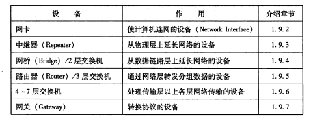

分层参考模型
ISO制定的OSI参考模型，分成了七层。
在这一模型中，每个分层都接收由它下一层所提供的特定服务，并且负责为自己的上一层提供特定的服务。上下层之间进行交互时所遵循的约定叫做“接口”。同一层之间的交互所遵循的约定叫做“协议。
各层的功能
网络层和数据链路层的区别
网络层与数据链路层都是基于目标地址将数据发送给接收端的，但是网络层负责将整个数据发送给最终目标地址，而数据链路层则只负责发送一个分段内的数据。
传输方式的分类
1、面向有连接型和面向无连接型
面向无连接型包括以太网、UDP等协议。
面向有连接型包括ATM、帧中继、TCP等协议。
2、电路交换和分组交换
在分组交换中，由分组交换机(路由器)连接通信线路。分组交换的大致处理过程是:发送端计算机将数据分组发送给路由器，路由器收到这些分组数据以后，缓存到自己的缓冲区，然后再转发给目标计算机。因此，分组交换也有另一个名称:蓄积交换。路由器接收到数据以后会按照顺序缓存到相应的队列当中，再以先进先出的顺序将它们逐一发送出去。
3、根据接收端数量分类
单播 广播 多播 任播
地址
MAC地址和IP地址在标识一个通讯主体时虽然都具有唯一性，但是只有IP地址具有层次性。
网络的构成要素

传输速率和吞吐量
在数据传输的过程中，两个设备之间数据流动的物理速度称为传输速率。单位为bps (Bits Per Second,每秒比特数)。从严格意义上讲，各种传输媒介中信号的流动速度是恒定的。因此，即使数据链路的传输速率不相同，也不会出现传输的速度忽快忽慢的情况“。传输速率高也不是指单位数据流动的速度有多快，而是指单位时间内传输的数据量有多少。以我们生活中的道路交通为例，低速数据链路就如同车道较少无法让很多车同时通过的情况。与之相反，高速数据链路就相当于有多个车道，一次允许更多车辆行驶的道路。传输速率又称作带宽( Bandwidth)。带宽越大网络传输能力就越强。
此外，主机之间实际的传输速率被称作吞吐量。其单位与带宽相同,都是bps (Bits Per Second)。吞吐量这个词不仅街量带宽，同时也衡量主机的CPU处理能力、网络的拥堵程度、报文中数据字段的占有份额(不含报文首部，只计算数据字段本身)等信息。
传输设备
1、中继器：物理层
①物理层面上延长网络的设备，但不能无限延长。负责对减弱的信号进行放大和发送。
②只负责将电信号转换为光信号，因此不能在传输速率不同的媒介中转发。也不负责判断数据是否发生错误。
③集线器可以看成多口中继器，每个端口都可以成为一个中继器。
2、网桥（2层交换机）：数据链路层
●网桥根据数据帧的内容转发数据给相邻的其他网络
●网桥没有连接网段个数的限制
●网桥基本只用于连接相同类型的网络。但是有时也可以连接传输速率不同的网络。
①数据链路的数据帧有一数据位叫做FCS，用以校验数据是否正确送达目的地。网桥通过检查这个域的值来丢弃损坏的数据。
②网桥还能通过地址自学机制和过滤功能控制网络流量。
③以太网等网络中经常使用的交换集线器(Hub”)，现在基本也属于网桥的一种。交换集线器中连接电缆的每个端口都能提供类似网桥的功能。
④自学式网桥。
3、路由器（3层交换机）：网络层
网桥是根据MAC地址进行处理，而路由器是根据IP地址进行处理
4、网关
网关是OSI参考模型中负责将从传输层到应用层的数据进行转换和转发的设备。它与4~7层交换机一样都是处理传输层及以上的数据，但是网关不仅转发数据还负责对数据进行转换，它通常会使用一个表示层或应用层网关，在两个不能进行直接通信的协议之间进行翻译，最终实现两者之间的通信。
数据链路层
MAC地址
MAC地址长48比特
共享介质型网络
在这种方式下，设备之间使用同一个载波信道进行发送和接收，为此基本上采用半双工通信方式，并对介质进行访问控制。
共享介质型网络有两种介质访问控制方式：①争用方式②令牌传递方式
争用方式（CSMA载波监听多路访问）
CSMA/CD是一种CSMA改良的方式，其工作原理如下
- 如果载波信道上没有数据流动，则任何站都可以发送数据。
- 检查是否会发生冲突。一旦发生冲突时，放弃发送数据，同时立即释放载波信道。
- 放弃发送以后，随机延时一段时间，再重新争用介质，重新发送帧。
令牌传递方式
优点：①不会有冲突②每个站都有通过平等循环获得令牌的机会，因此即使网络拥堵也不会导致性能下降。
缺点：数据链路的利用率达不到100%。
非共享介质网络
每个站直连交换机，由交换机负责转发数据帧，全双工通信。
缺点：一旦交换机发生故障，与之相连的所有计算机将无法通信。